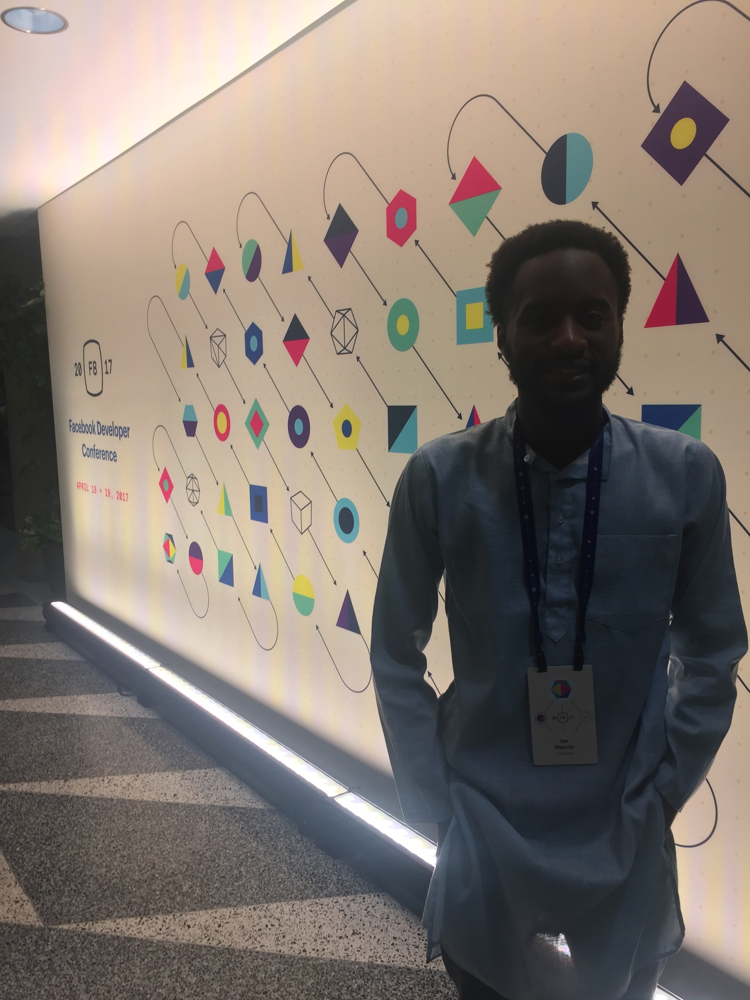
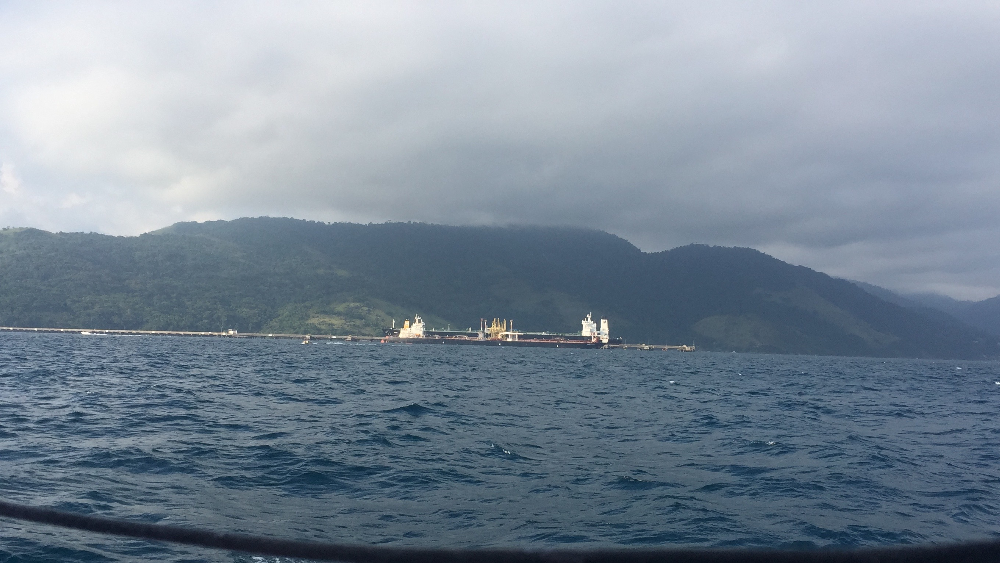

Travels
The first time I ever left the United States was in 2014 to study Hindi in Jaipur, India. After that I became hooked on traveling and later that year studied business in Brazil. Eventually, I was accepted to the Critical Language Scholarship Program to study
Urdu in Lucknow, India. Afterwhich, the U.S. Department of State interviewed me for a series promoting studying abroad.

JavaScript Algorithm Problems
After working on a few projects that involved JavaScript I started to like working with the language. Concurrently, I was interviewing with various tech companies.
Thus I decided to start documenting various algorithm problems I have worked on instead of completing them in secret, in hopes that the solutions can help others and myself as a reference point.

Technical Blog
During the spring of 2016 I founded an organization called X. It's objective is to bring African Americans to learn computer science, design and engineering skills. From that I started writing as an outlet to help myself remember concepts and as a starting point for others to start learning various topics.

Scuba Diving
My school mandates that students take a physical education credit. My eventual scuba diving instructor first invited me to take scuba diving as my PE credit; my inital response was "I didn't know black people scuba dived?!".
To my delight he started laughing and said, "Well I'm black and I love diving. Come take my course." So I soon developed the same passion.